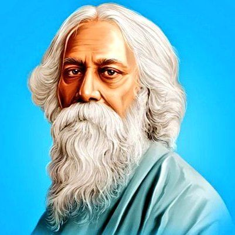
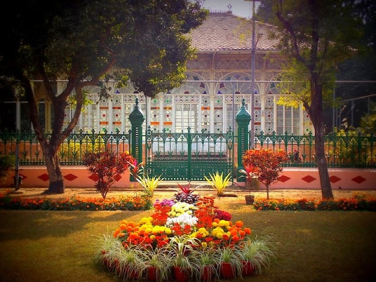
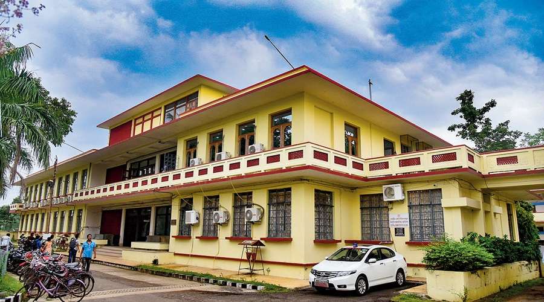
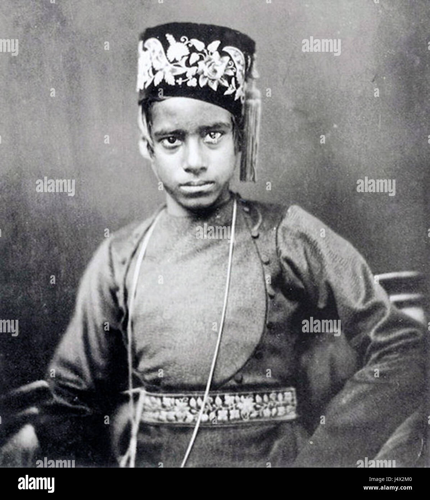
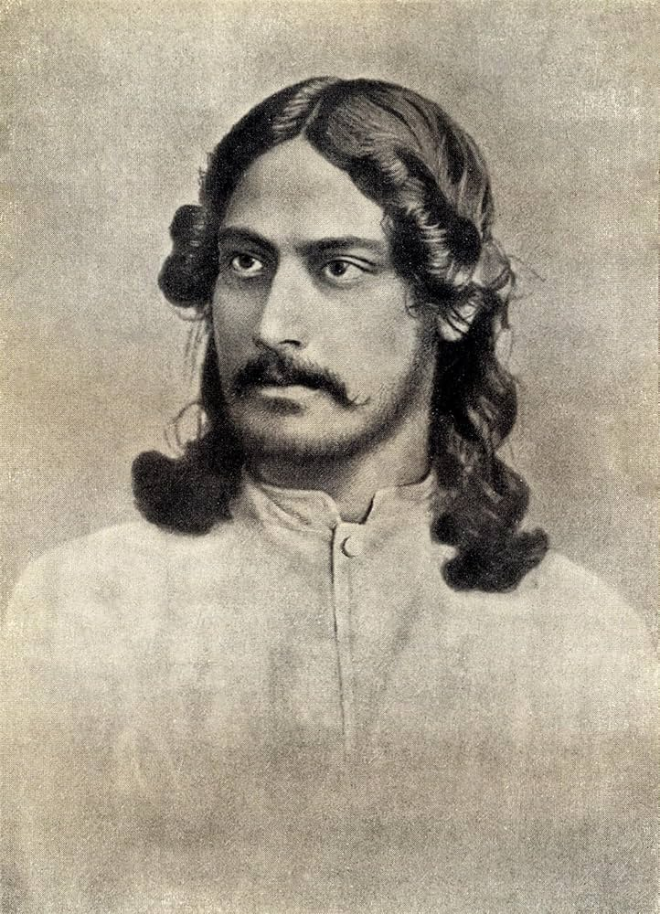
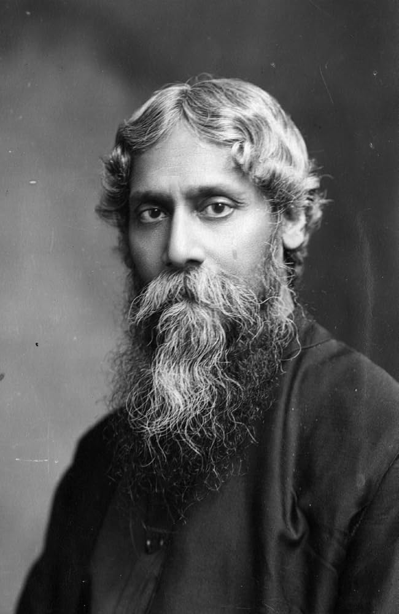

|
 |
Rabindranath TagoreRabindranath Tagore was one of the greatest literary and cultural figures of India. He was a poet, writer, philosopher, composer, playwright, educator and artist whose work had a lasting influence on Bengali literature and culture. He was born on 7 May 1861 in the Jorasanko area of Calcutta, into the famous Tagore family. |
| Information | Details |
|---|---|
| Born | 7 May, 1861 |
| Birthplace | Jorasanko, Calcutta |
| Father | Debendranath Tagore |
| Mother | Sarada Devi |
| Profession | Poet, Writer, Philosopher & Artist |
| Nobel Prize | literature, 1913 |
| Died | 7 August, 1941 |
Rabindranath Tagore was born on 7 May 1861 in the Jorasanko Thakur Bari of Calcutta. He belonged to the influential Tagore family and grew up in an environment surrounded by literature, music and art.
From an early age, Tagore showed a deep interest in poetry, literature and music. His unique creativity later made him one of the most influential figures in Bengali culture.
| Literary Works | |
| Works | Types |
|---|---|
| Gitanjali | Poetry |
| Gora | Novel |
| Chokher Bali | Novel |
| Ghore-Bahire | Novel |
| Sonar Tory | Poetry |
| Major Contributions | |||
|
|
|
|
|
|
|
|
Nobel PrizeGitanjali - 1913Rabindranath Tagore became the first Asian Nobel laureate in Literature. |
National AnthemesIND - Jana Gana Mana & BD - Amar Sonar BanglaRabindranath Tagore is associated with the national anthems of both India and Bangladesh. |
| Shantiniketan was developed by Rabindranath Tagore as an educational and cultural centre surrounded by nature. He believed that students should learn freely in a peaceful and natural environment. |
 |
|
 |
Visva-Bharati was founded by Rabindranath Tagore in 1921. It was established with the vision of bringing together different cultures, knowledge and ideas through education and learning. |
| Photo Gallery | ||
|---|---|---|
|
 |
 |
 |
| Childhood | Adolesent | Adult |
“If you shut the door to all errors, truth will be shut out.”
— Rabindranath Tagore